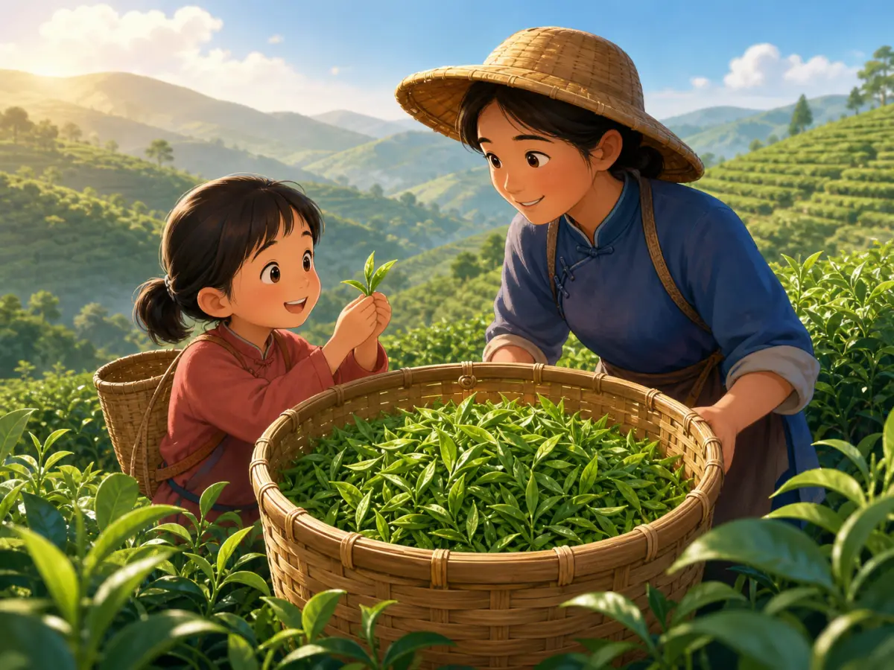
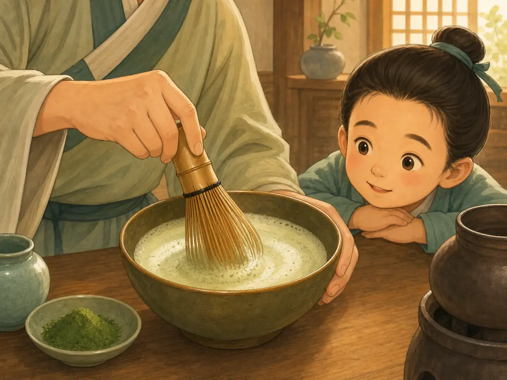
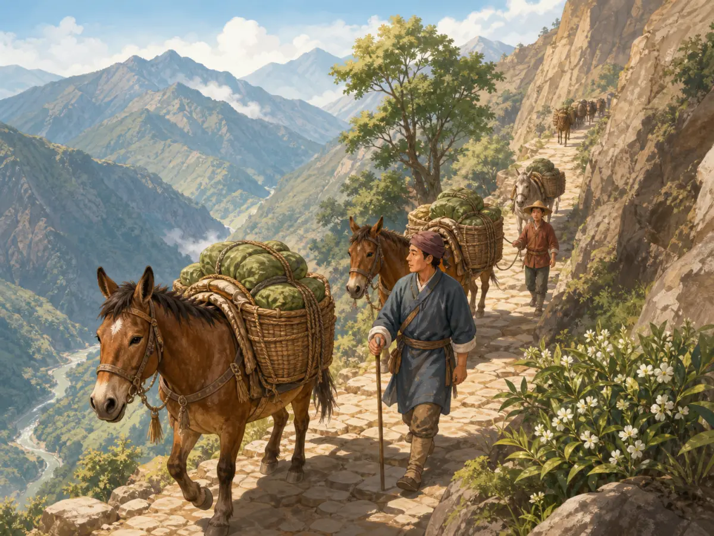

一片茶叶，几种历史
Tea: One Leaf, Many Histories
阅读难度 · 困难Reading level · Hard
Page 1
三张不同的“出生证明”
Three Clues to Tea's Beginnings

Modern illustration: tea picking still requires careful labor, but these people, plants, and clothes do not represent one documented period or community.
把一片茶叶放在手心，它轻得几乎没有分量，却好像带着三张不同的“出生证明”。第一张来自传说：神农尝百草，中了毒，又被茶解救。这个故事把茶和治病、辨认植物的智慧连在一起，可神农是文化传说中的人物，我们不知道他是否真实存在，更不能给“发现茶”写下公元前某一年的日期。
第二张来自地下。科学家在西汉景帝陵墓的陪葬坑中辨认出约两千一百年前的茶叶遗存，又在西藏西部一座稍晚的墓葬里发现茶的痕迹。它们是目前重要的早期实物证据，说明汉代皇室已经接触茶，茶也很早就向高原传播；但考古学找到的是“保存下来的最早证据之一”，不是“世界上第一杯茶”。第一杯早就喝完了，不会自己留下标签。
第三张仍长在山上。中国西南及相邻地区有丰富的茶树和近缘植物，茶树被人驯化的过程可能不止一次，也不是一个人完成的。云南景迈山的古茶林由布朗族和傣族社区经营了一千多年，茶树生长在森林下层，村庄、树林和信仰一起保护着茶园。它提醒我们：茶的早期历史不只属于帝王和名人，也属于长期观察山林、选择茶树、采叶制茶的许多社区。
Place one tea leaf in your palm. It weighs almost nothing, yet it seems to carry three different birth certificates. The first comes from legend. Shennong tastes hundreds of plants, is poisoned, and is saved by tea. The story connects tea with healing and the wisdom to recognize plants. But Shennong belongs to cultural tradition, and we do not know whether he was a real person. We certainly cannot write an exact year for his “discovery” of tea.
The second certificate comes from underground. Scientists identified tea remains in burial pits at the tomb of a Western Han emperor. The leaves were about 2,100 years old. Traces of tea also appeared in a somewhat later tomb in western Tibet. These are important pieces of early physical evidence. They show that members of the Han royal court knew tea and that tea traveled toward the Tibetan Plateau at an early date. But “the oldest evidence that happened to survive” is not the same as “the world's first cup.” That first cup disappeared long ago without leaving a label.
The third certificate is still growing on mountainsides. Southwest China and nearby regions contain many tea plants and wild relatives. People may have domesticated different lines of tea plants in more than one place, over a long time. On Jingmai Mountain in Yunnan, Blang and Dai communities have cared for tea forests for more than a thousand years. Tea shrubs grow below taller forest trees, and villages, beliefs, and farming knowledge help protect the groves together. Jingmai reminds us that tea's early history belongs not only to emperors and famous writers. It also belongs to the many communities that watched forests, selected plants, picked leaves, and learned what to do with them.
Page 2
一碗茶没有固定配方
One Bowl, Many Methods

Modern composite illustration: Song drinkers did whisk powdered tea with water to make foam, but these tools, clothes, and lesson are not a historical reconstruction.
把时间拨到唐朝，茶已经通过贡赋、市场和旅行进入更广阔的生活。有人把蒸过的茶叶压成饼，饮用前烤一烤、碾成末，再放入水中煮。公元八世纪，陆羽在《茶经》里记录茶树、产地、器具、制茶、煮水和品饮。他甚至为盐准备了一件专门的小器具，并主张在水初沸时加适量盐。正因为他写得具体，我们才看得见一套讲究的方法。
可是，《茶经》不是“全体唐朝人的食谱”。陆羽提到有人把葱、姜、枣、橘皮、茱萸、薄荷等和茶反复熬煮，接着毫不客气地批评这种茶汤像沟渠里的废水。孩子也许不同意他的口味，但这句话证明当时喝法很多，连爱茶的人也会争论。我们可以说饼茶和煮茶在唐代很重要，却不能说每个人都把盐、葱、姜放进同一口锅。
到了宋代，一些宫廷、寺院和城市饮茶者喜欢把细茶末放入碗中，分次加水，再用工具快速击拂出泡沫。黑色建盏能衬出浅色茶沫，茶的颜色、泡沫和动作都成了欣赏与比赛的一部分。与此同时，别的喝法也没有从此消失。
茶文化还跨海旅行。日本早在派遣使者和僧人到唐朝时就接触中国茶；后来，往来宋朝的僧人又带回种茶知识、末茶和搅拌饮用的方法。可是日本茶之汤并不是把一只宋代茶碗原封不动复制过去。寺院、武士、公家、商人和制陶者在几个世纪里不断改变仪式、空间、器物和审美，才形成日本自己的传统。这是一段交流与再创造的历史，不是一支“谁发明、谁照抄”的箭头。
Move forward to the Tang dynasty. Tea was reaching more people through taxes paid in goods, markets, gifts, and travel. One important method began with steamed leaves pressed into cakes. A drinker could toast a piece, grind it, and cook the powder in water. In the eighth century, Lu Yu wrote The Classic of Tea. He described the plant, growing regions, tools, processing, water, preparation, and tasting. He even included a special salt container and advised adding a proper amount of salt when the water first began to boil. Because he was so specific, we can see one carefully designed way to make tea.
But The Classic of Tea was not a recipe followed by every Tang household. Lu Yu complained that some people boiled tea again and again with ingredients such as scallions, ginger, dates, orange peel, cornel, or mint. He compared the result to water from a ditch. You may or may not agree with his taste, but his grumbling proves that people prepared tea in different ways - and argued about them. Tea cakes and boiled tea mattered in the Tang. That does not mean everyone put salt, scallions, and ginger into the same pot.
By the Song dynasty, some drinkers at court, in monasteries, and in cities favored powdered tea. They placed fine tea powder in a bowl, added water in stages, and whisked until foam appeared. Dark Jian ware bowls made the pale foam stand out. Color, foam, and the skill of the person's hand became part of tea appreciation and competition. Other ways of drinking did not suddenly vanish.
Tea culture also traveled across the sea. Japan encountered Chinese tea through envoys and monks who visited Tang China. Later, monks traveling between Japan and Song China carried home tea-growing knowledge and methods for grinding and whisking powdered tea. Yet Japanese chanoyu, or the art of tea, was not a Song bowl copied without change. Over several centuries, temples, warriors, nobles, townspeople, merchants, and potters reshaped its rituals, rooms, tools, and ideals. This is a history of exchange and new creation, not a one-way arrow marked “invented here, copied there.”
Page 3
叶子为什么变色？
Why Does the Leaf Change Color?

Modern concept image: green, oolong, and black tea are not three stages of one batch. Plant variety, growing place, and the full process all matter.
现在撕开一片鲜叶。叶子里的物质接触空气和酶，就会慢慢发生氧化，好像切开的苹果逐渐变褐。制绿茶时，人们较早用热量让酶停止工作，尽量限制氧化；做乌龙茶时会控制一部分氧化；做红茶时则让氧化进行得更充分。茶业里常把这一步叫“发酵”，但从食品科学看，红茶变色主要是酶促氧化，并不像面包或酸奶那样主要靠微生物发酵。黑茶等后发酵茶才会明显利用微生物参与后期变化。
武夷山桐木村流传着一个著名故事：明清交替的战乱中，士兵占了茶厂，鲜叶被耽搁，茶农只好赶工揉制、用松木烘干，意外做出有烟香的正山小种。这个故事来自当地口述传统，没有同时代文字能证明那一天确实发生过。较稳妥的历史结论是：武夷红茶技术在明末清初逐渐形成，并与海外市场关系密切。技术通常经过许多人反复试做、调整和销售，很少只靠一次神奇事故完整诞生。
今天中国常把茶分成绿、白、黄、乌龙、红、黑六大类。这套“六大茶类”按照加工方法和品质特点整理，是现代茶学形成的分类框架，不是唐宋人早已使用的六个固定抽屉。它很有用，却不能包办茶的全部差别。真正的茶都来自茶树这个物种，但茶树有不同变种和许多栽培品种；海拔、土壤、季节、采摘部位和制茶人的选择也会改变香气与滋味。不是随手摘下“同一种叶子”，只按一个按钮，就能得到所有茶。
中文“红茶”看茶汤的红亮，英文 black tea 常看干叶的深色；中文“黑茶”在英文里通常叫 dark tea 或 post-fermented tea。同一杯茶换一种语言，颜色名称都可能改变。分类不是大自然贴在叶子上的标签，而是人为了生产、交易和理解茶而设计的地图。
Now tear a fresh leaf. Substances inside it meet oxygen and enzymes, and the leaf slowly changes, much as a cut apple turns brown. To make green tea, producers heat the leaves fairly early, stopping the enzymes and limiting oxidation. Oolong makers allow and control some oxidation. For black tea - the tea called hongcha, or “red tea,” in Chinese - oxidation goes much farther. Tea makers often call this stage “fermentation.” In food science, however, black tea changes mainly through oxidation driven by enzymes in the leaf. It is not like bread or yogurt, which depends mainly on microbes. Microbes do play a much larger part in the later changes of dark, or post-fermented, teas.
A famous story from Tongmu village in the Wuyi Mountains tells of soldiers taking over a tea workshop during the wars around the fall of the Ming dynasty. The leaves were delayed, so the farmers rushed to roll and dry them over pinewood. By accident, the story says, they created the smoky tea now called Lapsang Souchong. This is local oral tradition; no written record from the time proves that one dramatic day occurred exactly that way. A safer historical conclusion is that Wuyi black-tea methods took shape around the late Ming and early Qing periods and became closely tied to overseas buyers. New technology usually grows through many people's experiments, adjustments, and sales - not one perfect accident.
Today, Chinese tea is often grouped into six major categories: green, white, yellow, oolong, red, and dark. This six-part system organizes teas by their processing and finished qualities. It is a framework shaped by modern tea science, not six fixed drawers that shoppers in the Tang or Song would have recognized. The map is useful, but it does not explain every difference. True tea comes from the species Camellia sinensis, yet that species includes different varieties and many cultivated types. Elevation, soil, season, the leaves picked, and the producer's choices all change aroma and flavor. Tea is not one identical leaf that turns into every style when someone presses a single button.
The color words can also switch between languages. Chinese “red tea” is usually black tea in English, where the name points to the dark dried leaves. Chinese “black tea” is usually called dark tea or post-fermented tea in English. Classification is not a label that nature prints on a leaf. It is a map people make to produce, sell, and understand tea.
Page 4
山路、海船与一杯茶的代价
Mountain Roads, Ocean Ships, and the Cost of a Cup

Modern composite illustration: the Tea Horse Road was a changing network of routes. This cliff, caravan, cargo, and clothing do not record one real journey.
茶要远行，先得变得结实。压紧的茶砖方便堆放，也能经受驮运。今天人们说“茶马古道”，听起来像一条从起点直通终点的公路，其实它是四川、云南、青海、甘肃、康区和西藏高原之间许多山路、城镇与驿站组成的网络，而且路线会随战争、政策和市场改变。
茶换马确实是其中重要的一部分。尤其在一些宋、明时期，王朝设官署、控制边茶，希望用茶和其他物资取得军马。可是路上不只走“汉人茶商”和“藏族卖马人”。商人、赶马人、背夫、客栈主人、寺院和地方权势者都参与其中，货物也包括羊毛、盐、药材、皮毛等。后来朝廷不再大量需要高原马，贸易仍继续，只是货物组合改变。茶进入藏族等高原社区后，被当地人做成酥油茶等自己的饮食传统；说“藏族只吃油腻肉食，所以必须靠茶消化”，既不是可靠的医学解释，也把多样的高原生活压成了刻板印象。
接着，茶登上海船。十七世纪，葡萄牙、荷兰和英国商人把亚洲茶叶带进欧洲市场。茶起初昂贵，贸易公司和高额税收让它更像少数富人的奢侈品；后来价格下降，才进入更多家庭。英国对中国茶的巨大需求也造成贸易矛盾。英国商人把在殖民地印度生产的鸦片非法卖进中国，用所得白银支持茶等商品的购买。清政府禁烟与英国坚持贸易特权的冲突，最终成为鸦片战争的重要背景。甜甜的茶桌背后，因此藏着毒品、强迫开放港口和战争。
十九世纪，英国殖民者又在印度阿萨姆和锡兰，也就是今天的斯里兰卡，扩张大茶园，以减少对中国茶的依赖。他们利用当地茶树和知识，也移走中国茶苗、种子并招募制茶工人。大种植园靠土地控制和大量劳动运转；阿萨姆许多工人被契约从印度其他地区迁来，工作与离开的自由受到严厉限制。茶后来也在非洲等地成为重要作物，各地生产者创造出自己的风味。于是，一杯世界饮料既有交流和创造，也有帝国、战争与被忽略的劳动。
To travel far, tea first had to become sturdy. Compressed bricks were easier to stack and could survive a rough caravan journey. Today the name “Tea Horse Road” sounds like one highway with a clear beginning and end. It was really a changing network of mountain paths, towns, and stopping places connecting Sichuan, Yunnan, Qinghai, Gansu, Kham, and the Tibetan Plateau. War, government policy, and markets could all shift the routes.
The exchange of tea for horses was an important part of this history. During parts of the Song and Ming periods, governments created offices and controlled “border tea” because they hoped to obtain military horses. But the roads did not carry only “Han tea sellers” in one direction and “Tibetan horse sellers” in the other. Merchants, caravan leaders, porters, innkeepers, monasteries, and local leaders took part. Wool, salt, medicinal plants, hides, and other goods traveled too. When later governments no longer needed so many plateau horses, trade continued with a different mix of goods. Tibetan and other highland communities made tea part of their own food traditions, including butter tea. Saying that “Tibetans ate only greasy meat and needed tea to digest it” is neither a sound medical explanation nor a fair picture of varied highland lives.
Then tea boarded ocean-going ships. In the seventeenth century, Portuguese, Dutch, and British merchants carried Asian tea into European markets. At first it was expensive. Trading-company control and heavy taxes helped keep it a luxury for the wealthy. As prices fell, more households could buy it. Britain's enormous demand for Chinese tea also created a trade conflict. British merchants illegally sold opium produced in colonial India into China, then used the silver they received to help pay for tea and other Chinese goods. The Qing government's effort to stop opium and Britain's demand for trading rights became important causes of the Opium Wars. Behind a sweet cup on a British table stood an addictive drug, ports forced open, and war.
In the nineteenth century, British colonizers expanded large tea plantations in Assam, India, and Ceylon, now Sri Lanka, so the empire would depend less on Chinese tea. They drew on local tea plants and knowledge, while also moving tea seeds and plants from China and recruiting Chinese tea workers. Huge estates depended on control of land and human labor. In Assam, many workers were brought from other parts of India under contracts that sharply limited their freedom to work and leave. Tea later became an important crop in parts of Africa and elsewhere, where producers created their own styles. A world drink can carry exchange and invention - but also empire, war, and labor that often goes unseen.
喝之前，再看一眼叶子
Look Once More Before You Sip
最诚实的茶故事没有单一主人公。神农传说、汉墓里的茶叶、陆羽的争论、宋代的泡沫、日本的再创造、山路上的驮队和种植园工人的双手，都在同一杯茶里留下痕迹。下一次端起茶，不妨先问：这是什么茶树，怎样加工，从哪里来，又是谁把它送到我面前？一片叶子不会回答，但历史会。
The most honest history of tea has no single hero. The Shennong legend, leaves in a Han tomb, Lu Yu's strong opinions, Song foam, Japanese reinvention, mountain caravans, and plantation workers' hands have all left traces in the same cup. The next time you lift a cup of tea, ask: What kind of plant grew these leaves? How were they processed? Where did they travel, and whose work brought them to me? The leaf cannot answer, but history can.